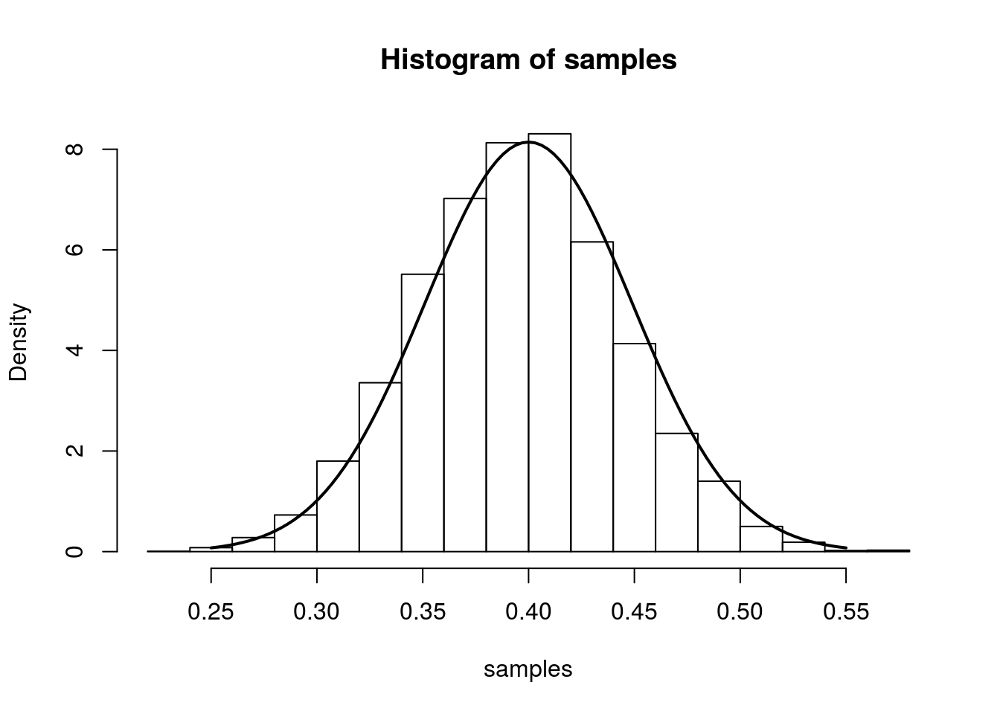
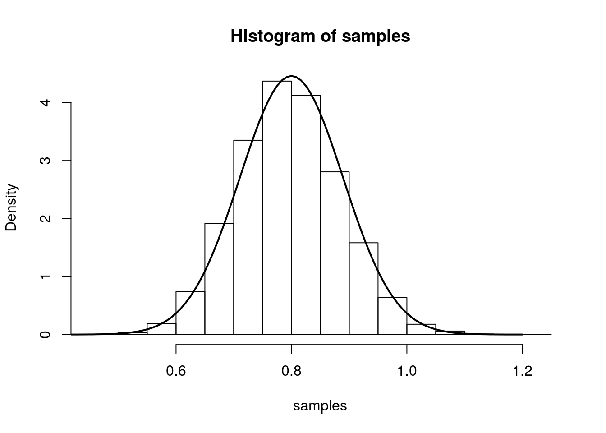

Last updated: 2017-03-06
Code version: c7339fc
Main Result
Maximum likelihood is a popular method for estimating parameters in a statistical model. Assume we observe i.i.d. samples \(X_1,\ldots,X_n\) with probability distribution governed by the parameter \(\theta\). Let \(\theta_0\) be the true value of \(\theta\), and \(\hat{\theta}\) be the maximum likelihood estimate (MLE). Under regularity conditions, the MLE for \(\theta\) is asymptotically normal with mean \(\theta_0\) and variance \(I^{-1}(\theta_0)\). \(I(\theta_0)\) is called the Fisher information – we will describe it below. Precisely, this result states that: \[\sqrt{n}(\hat{\theta} - \theta_0) \rightarrow N(0,I^{-1}(\theta_0))\]
If \(\hat{\theta}\) is the MLE, then this says that \((\hat{\theta} - \theta_0)/I^{-1}(\theta_0)\) is nearly \(N(0,1)\) when the sample size \(n\) is large. This allows us to construct approximate confidence intervals for \(\theta\) and perform hypothesis tests.
Example 1: Bernoulli Proportion
Assume we observe i.i.d. samples \(X_1,\ldots,X_n\) drawn from a Bernoulli distribution with true parameter \(p_0\). Given, these observations, the log-likelihood is: \[\ell(p) = \sum X_i\log{p} + (1-X_i)\log(1-p)\] Setting the derivative equal to zero, we obtain:
\[\frac{d}{dp}\ell(p) = \sum \frac{X_i}{p} - \frac{(1-X_i)}{1-p} = 0\]
Solving for \(p\), we get that the MLE is the sample mean: \(\hat{p} = \bar{X}\).
The second derivative with respect to p is:
\[\frac{d^2}{dp^2} \ell(p) = \sum -\frac{X_i}{p^2} - \frac{(1-X_i)}{(1-p)^2}\]
The Fisher information is therefore: \[I(p) = E\left[-\frac{d^2}{dp^2}\ell(p)\right] = -\frac{E[X_i]}{p^2} - \frac{(1-E[X_i])}{(1-p)^2} = \frac{1}{p(1-p)}\]
From the result at the top of the page, we have that (for large n), \(\hat{p}\) is approximately \(N\left(p,\frac{p(1-p)}{n}\right)\). We illustrate this approximation in the simulation below.
The simulation creates 7000 different sets of samples. In each sample, we have 100 draws from a Bernoulli distribution with true parameter equal to 0.4. We compute the MLE separately for each sample and plot a histogram of these 7000 MLEs. On top of this histogram, we plot the density of the asymptotic distribution as a solid line.
num.iterations <- 7000
p.truth <- 0.4
num.samples.per.iter <- 100
samples <- numeric(num.iterations)
for(iter in seq_len(num.iterations)) {
samples[iter] <- mean(rbinom(num.samples.per.iter, 1, p.truth))
}
hist(samples, freq=F)
curve(dnorm(x, mean=p.truth,sd=sqrt((p.truth*(1-p.truth)/num.samples.per.iter) )), .25, .55, lwd=2, xlab = "", ylab = "", add = T)

Example 2: Poisson Mean
Assume we observe i.i.d. samples \(X_1,\ldots,X_n\) drawn from a Poisson distribution with true parameter \(\lambda\). The log-likelihood is:
\[ \ell(\lambda; X_1,\ldots,X_n) = \sum_{i=1}^n -\lambda + X_i\log(\lambda) + \log(X_i!)\]
Taking the derivative with respect to \(\lambda\), setting it equal to zero, and solving for \(\lambda\) gives us the estimate \(\hat{lambda} = \frac{1}{n}\sum_{i=1}^{n}X_i = \bar{X}\). The Fisher information is:
\[ E_{\lambda}\left[-\frac{d^2}{d\lambda^2}\ell(\lambda)\right] = E[\frac{X}{\lambda^2}] = \frac{1}{\lambda}\]
So we have that, we have that (for large n), \(\hat{\lambda}\) is approximately \(N\left(\lambda,\frac{1}{n\lambda}\right)\). We illustrate this in the same was as above:
num.iterations <- 7000
lambda.truth <- 0.8
num.samples.per.iter <- 100
samples <- numeric(num.iterations)
for(iter in seq_len(num.iterations)) {
samples[iter] <- mean(rpois(num.samples.per.iter, lambda.truth))
}
hist(samples, freq=F)
curve(dnorm(x, mean=lambda.truth,sd=sqrt(lambda.truth/num.samples.per.iter) ), 0.4, 1.2, lwd=2, xlab = "", ylab = "", add = T)

This site was created with R Markdown